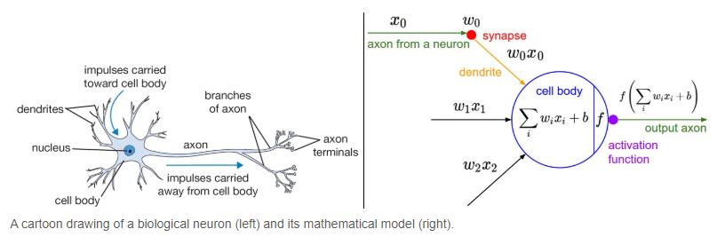
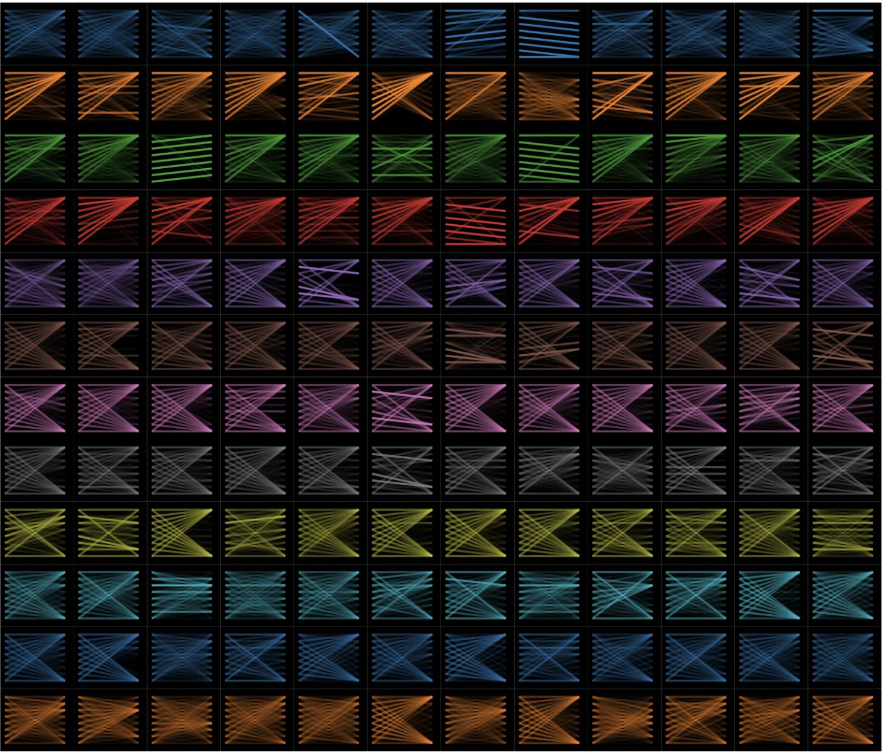

「花」在「一朵花」和「花錢」裡，應該是同一個向量嗎？Should 花 in 一朵花 (a flower) and 花錢 (to spend money) receive the same vector?
CHI3242 文本挖掘 Text Mining for Chinese Humanities · ←→ navigate · 1–6 sections · L laser pointer · F fullscreen
回顧：邏輯迴歸就是一個「神經元」Recap: logistic regression is a single neuron
加權總和 → 激活函數 → 機率：\(p=\sigma(\mathbf w\cdot\mathbf x+b)\)weighted sum, then an activation function, then a probability
邏輯迴歸 ＝ 只有一個神經元的網絡Logistic regression is a network with exactly one neuron.
為什麼叫「神經」網絡？Why is it called a neural network?

樹突dendrites→輸入 \(x_i\)inputs
突觸強弱synapses→權重 \(w_i\)weights
細胞體cell body→加權總和 \(\sum w_ix_i+b\)weighted sum
放電firing→激活函數 \(f\)activation
軸突axon→輸出，傳給下一個神經元output to the next neuron
只是比喻：人工神經網絡是一個由矩陣與函數組成的數學模型。上週的 Hebb：「一起放電的神經元，彼此的連結會變強」。The analogy is loose: an artificial network is a mathematical function built from matrices, inspired by neurons that strengthen their connections.
激活函數：神經元的「開關」Activation functions: what a neuron does with its sum z
階躍 step
\(z>0 \;\Rightarrow\; 1\)，否則 \(0\)
只有開或關on or off; the earliest perceptrons
S 形 sigmoid
\(\sigma(z)=\dfrac{1}{1+e^{-z}}\)
平滑地介於 0 與 1smooth, 0 to 1; as in logistic regression
雙曲正切 tanh
\(\tanh(z)=\dfrac{e^{z}-e^{-z}}{e^{z}+e^{-z}}\)
介於 −1 與 1，以 0 為中心like sigmoid, but centred on 0
線性整流 ReLU
\(\mathrm{ReLU}(z)=\max(0,\,z)\)
負的變 0，正的保留negatives become 0; most common today
帶洩漏 Leaky ReLU
\(\max(0.1z,\,z)\)
負的保留一點點斜率negatives keep a small slope
指數線性 ELU
\(z\)，或 \(e^{z}-1\)（\(z<0\)）
負的平滑地趨近 −1negatives curve smoothly towards −1
高斯誤差 GELU
\(z\cdot\Phi(z)\)
BERT 用的就是它the one BERT uses
自門控 SiLU / Swish
\(z\cdot\sigma(z)\)
平滑版的 ReLUa smooth ReLU
每個神經元都是兩步：先算加權總和 \(z=\mathbf w\cdot\mathbf x+b\)，再用激活函數決定輸出。Every neuron works in two steps: a weighted sum, then an activation function.
回顧：Softmax ＝ 一排神經元Recap: softmax puts several neurons side by side
同一組輸入，三個神經元，各有自己的權重：這就是一層（layer）Same inputs, three neurons, each with its own weights: together they form a layer.
15 個權重排成矩陣 \(W\)：\(\mathbf z = W\mathbf x + \mathbf b\)Fifteen weights fit in one matrix, so a whole layer is a single matrix product.
先別急著輸出：再加一層Don't rush to the output: add another layer
①Softmax：輸入直接連到輸出，馬上給出機率Softmax goes straight from the inputs to probabilities.
②先不輸出機率：保留每個神經元的激活值 \(\mathbf h\)Keep the activations instead of turning them into probabilities.
③把 \(\mathbf h\) 交給新的一層：原本的輸出層變成隱藏層Pass them to a new layer; the old output layer is now a hidden layer.
④\(\mathbf h=\sigma(W^{(1)}\mathbf x+\mathbf b^{(1)})\) \(\mathbf p=\operatorname{softmax}(W^{(2)}\mathbf h+\mathbf b^{(2)})\) 疊很多層 ＝ 深度學習Stack many layers and you have deep learning.
一條直線分得開嗎？Can a single straight line separate the two classes?
z=x1+x2+
輸出 ＝ step(\(z\))：\(z > 0\) → 1，否則 0a step activation: output 1 if z > 0, otherwise 0
一個神經元 ＝ 一條直線 \(z = 0\)。 XOR：怎麼選 \(w_1, w_2, b\)，都至少錯一個。One neuron is one line; for XOR, every choice misses at least one point.
隱藏層怎麼解決 XOR？先搬動點，再畫直線How a hidden layer solves XOR: move the points, then draw a line
輸入空間 \((x_1, x_2)\)input space網絡step activation: 1 if Σ > 0隱藏空間 \((h_1, h_2)\)hidden space
\(h_1\) ＝ 或 OR：「至少一個是 1」at least one input is on
\(h_2\) ＝ 非且 NAND：「不是兩個都是 1」not both inputs are on
輸出 ＝ \(h_1\) 且 \(h_2\)：新空間裡，一條直線就夠了In the new space, one line separates the classes.
隱藏層的直覺：把空間摺起來The intuition behind a hidden layer: fold the space
隱藏層把資料搬到新的空間，讓問題變簡單。A hidden layer moves the data into a new space where the problem becomes easy.
像摺紙一樣沿對角線對摺：\((1,0)\) 疊到 \((0,1)\) 上，兩個綠點疊在一起。Fold the paper along the diagonal: the two green points meet.
摺好之後，一條直線就分得開。能摺，是因為有激活函數；只有加權總和，疊再多層也摺不了。After the fold, one line separates the classes. The activation function makes folding possible; weighted sums alone never fold.
延伸觀看：Welch Labs，〈Why Deep Learning Works Unreasonably Well〉 Further viewing: a video on how networks fold space.
網絡怎麼學？誤差往回傳How does a network learn? The error travels backwards
反向傳播（backpropagation） Rumelhart、Hinton、Williams（1986）Geoffrey Hinton, Nobel Prize in Physics 2024
①前向：輸出 0.73，正確答案是 1The network says 0.73; the answer is 1.
②誤差 −0.27：輸出太低了The error: the output is too low.
③調最後一層的權重：都往上推，\(h\) 越大推越多Nudge the last weights up, most where h is large.
④\(h\) 本身改不了，只收到訊息：要變大或要變小h itself only gets a message: grow or shrink.
⑤再調前一層的權重，規則相同；沒出現的詞不變Same rule one layer back; absent words stay.
重複成千上萬個例子：這就是「學習」。Repeat this for thousands of examples: that is learning.
動手訓練一個神經網絡：辨認手寫數字Train a neural network yourself: recognizing handwritten digits
① 輸入：畫一個數字Input: draw a digit (0–9)
0已學樣本examples seen
0.00輪次epochs
–損失loss
–測試準確率test accuracy
隱藏層 hidden layers2
點擊每層的標籤切換激活函數 click a layer's label to change its activation
回到上週的問題：一個詞，一個向量？Back to last week's problem: one word, one vector?
「水是人體最重要的組成成分」「他的演講很水」「市中心」「下定決心」
靜態 static每個詞一個向量（word2vec）上下文 contextual每次出現一個向量
目標：每一次出現的「水」，都依它的上下文得到自己的向量。Goal: every occurrence of 水 gets its own vector, decided by its context.
一詞多義無處不在Polysemy is everywhere
行
銀行háng · bank
行走 xíng · to walk
你真行！ capable
行不行？ OK?
打
打電話 to make a call
打籃球 to play
打醬油 to buy; to be a bystander
打車 to take a taxi
意思
「你這是什麼意思？」 meaning
「沒什麼意思，」 intention
「意思意思而已。」 a small gift
「真不好意思。」 embarrassed
要分辨「行」的意思，就得讀完整句，把周圍的詞組合起來：這是神經網絡擅長的事。To choose a sense, a model has to read the whole sentence and combine the surrounding words, which is what neural networks are good at.
BERT：基於變換器的雙向編碼器表示技術BERT: Bidirectional Encoder Representations from Transformers
Bidirectional · 雙向同時讀左邊和右邊的上下文：「這篇文章很水」的「水」能看到前面的「文章」。Every token sees the words on both sides.
E
Encoder · 編碼器把一段文字編碼成一串向量，每個詞元（token）一個。It turns a text into vectors, one per token.
R
Representations · 表示這些向量就是文本的「表示」：可以拿去分類、比較、搜尋。The vectors represent the text for later tasks.
T
Transformers · 變換器一種神經網絡架構，核心是自注意力：每個詞都去「看」其他所有詞。The architecture whose core is self-attention.
BERT 的結構：從詞元到上下文向量Inside BERT: from tokens to contextual vectors
①中文 BERT 以字為詞元，句首加 [CLS]，句尾加 [SEP]Chinese BERT splits text into characters and adds [CLS] at the start and [SEP] at the end.
②每個字查表得到一個靜態向量，就像 word2vecEach character first gets a static vector from a lookup table, much like word2vec.
③每一層，每個字都看所有其他字，更新自己的向量In every layer, every character looks at all the others and updates its own vector.
④重複 12 層，向量愈來愈「懂」上下文After twelve layers, each vector carries more and more of its context.
⑤最後一層的「水」已經讀過「文章」和「很」：這是上下文向量（768 維）The final 水 vector has read 文章 and 很. It is a contextual vector with 768 dimensions.
自注意力：每個字都在問「誰對我有用？」Self-attention: every token asks which other tokens are useful
「如果你含有對我有用的資訊，那麼我就應該關注你。」“If you have something useful for me, I should attend to you.”
線愈粗，「水」對那個詞的注意力愈大；新的「水」向量 ＝ 各詞向量依注意力加權平均（數字為示意）。Thicker lines mean more attention from 水. The new 水 vector is the attention-weighted average of the token vectors (toy numbers).
查詢、鍵、值：Query, Key, ValueQueries, keys and values
查詢 Query \(\mathbf q=W_Q\mathbf x\)「我在找什麼？」像一個問題、一個搜尋請求。What this token is looking for.
鍵 Key \(\mathbf k=W_K\mathbf x\)「我能提供什麼？」標示自己和別人的問題有多相關。What this token can offer.
值 Value \(\mathbf v=W_V\mathbf x\)「我的實際內容」：按查詢與鍵的匹配度被取出來。The content that is actually passed on.
圖書館比喻：查詢 ＝ 你的問題；鍵 ＝ 書脊上的標籤；值 ＝ 書的內容。三個矩陣 \(W_Q, W_K, W_V\) 都是學出來的。In a library, the query is your question, keys are the spine labels and values are the books. All three matrices are learned.
所以 \(\mathbf q=W_Q\mathbf x\)、\(\mathbf k=W_K\mathbf x\)、\(\mathbf v=W_V\mathbf x\) 就是三次這樣的變形。So q, k and v are three such transformations of the same x.
算注意力：內積，再 SoftmaxComputing attention: a dot product, then a softmax
拖動紅色查詢 Q，或黑色的鍵 K：Drag the red query or any black key.
矩陣寫法：所有詞元的 \(\mathbf q\)、\(\mathbf k\) 各疊成 \(Q\)、\(K\) 的一列（row），\(QK^{\top}\) 一次算出所有的 \(\mathbf q^{\top}\mathbf k\)。 此二維示意省略 \(\sqrt{d_k}\)（\(d_k=2\)）。BERT 的 \(d_k=64\)。 完整互動版 full version
多頭、多層：144 種注意力Many heads, many layers: 144 attention patterns

12層 layers
12頭 heads / 層
768維 dimensions
1.1 億參數 parameters
每一層有 12 個頭（head），各有自己的 \(W_Q, W_K, W_V\)，各自學一種關係：相鄰的字、句法、指代……Each layer has twelve heads with their own matrices, and each head learns its own kind of relation.
左圖：每一格是一個頭，線條連接互相注意的詞元。沒有人規定每個頭要學什麼，這些模式都是從文本中自己學出來的。Each cell is one head, with lines joining tokens that attend to each other. Nobody tells a head what to learn.
BERT 怎麼學？先預訓練，再微調How does BERT learn? Pre-training, then fine-tuning
任務一：遮蔽詞語推斷Masked language modelling
今天天氣很 [MASK]。
好 0.41熱 0.22冷 0.17貴 0.002書 0.0004（示意 toy）
隨機遮住 15% 的字，讓模型用左右兩邊猜回來。Hide 15% of the characters and predict them from both sides.
任務二：下一句預測Next sentence prediction
[CLS] 今天天氣很好。[SEP] 我們去散步吧！[SEP]
是下一句 IsNext ✓
[CLS] 今天天氣很好。[SEP] 三角形有三條邊。[SEP]
不是下一句 NotNext ✗
兩句是否相連？答案由 [CLS] 的向量給出。Do the two sentences belong together? The [CLS] vector answers.
不需要人工標註：答案就在文本裡（和 word2vec 一樣）。預訓練用大量文本；微調再用少量有標籤的資料，學一個下游任務（downstream task），如情感分類。No human labels are needed for pre-training. Fine-tuning then adapts the model to a downstream task, such as sentiment classification, with a small labelled dataset.
Cai, Kurzynski, and Xu, “Good Things Come in Pairs: A Computational Study of Poetic Parallelism in the Six Dynasties,” Journal of Chinese Literature and Culture 12.2 (2025), Appendix 2.
按 N 切換五言／七言。Kurzynski, Xu, and Feng, “Like Threaded Pearls: Repetition between Redundancy and Meaning in Chinese Regulated Verse and Patterned Prose” (manuscript), §4, Fig. 4a.
預訓練學「語言」：別人已經做好。 微調學「任務」：用少量資料，你來做。Pre-training learns the language and is already done for you; fine-tuning learns your task from a small labelled dataset.
本週實作：照這五步訓練情感分類器，上載到 Hugging Face。This week's lab: follow these five steps to train a sentiment classifier and upload it to Hugging Face.
為什麼要用 GPU？很多計算可以同時做Why a GPU? Much of the computation can happen at the same time
①CPU：少數幾個強大的核心（如 8 個），擅長一步接一步的複雜工作A CPU has a few powerful cores, good at complex step-by-step work.
②GPU：成千上萬個簡單的核心（T4 有 2,560 個），原為遊戲畫面設計：每個像素各算各的A GPU has thousands of simple cores, first built to compute every pixel of a game at once.
③神經網絡幾乎都是矩陣乘法：每個內積彼此獨立。注意力的 \(QK^{\top}\) 裡，每一對字的分數都可以同時算Networks are mostly matrix products made of independent dot products; every pair of tokens in attention can be scored at once.
早期的模型（RNN）要一個字一個字地讀；Transformer 一次看整句，正好適合 GPU。所以本週實作要在 Colab 選 T4 GPU。Older models (RNNs) read one token at a time; a Transformer reads the whole sentence at once, which suits a GPU.
GPU 有多貴？How expensive are GPUs?
NVIDIA RTX PRO 6000 Blackwell
所以我們租用雲端 GPU：Colab 免費的 T4 足夠微調 BERT；從頭訓練一個大模型，只有少數公司負擔得起。So we rent cloud GPUs: a free T4 is enough to fine-tune BERT, while training a large model from scratch is affordable for only a few companies.
價格為約數（2026 年，1 美元 ≈ 7.8 港元）。RTX 5090：NVIDIA 建議售價；RTX PRO 6000：香港零售網店，2026 年 11 月；H100、B200 伺服器：IntuitionLabs, “NVIDIA AI GPU Pricing Guide” (2026)；GPT-4：Sam Altman 稱「超過一億美元」，Stanford AI Index 2025 估計 7,800 萬至 1 億美元。
總結Summary
1邏輯迴歸 ＝ 一個神經元；把激活值交給下一層，就成了神經網絡。Logistic regression is one neuron; passing activations to the next layer gives a neural network.
2隱藏層把空間摺疊：一條直線分不開的問題（XOR），摺過之後就分得開。Hidden layers fold the space, so a problem like XOR becomes separable by a line.
3靜態詞向量無法區分一詞多義；BERT 為每一次出現計算一個上下文向量。Static vectors merge the senses of a word; BERT computes a contextual vector for every occurrence.
4自注意力：查詢 · 鍵 → softmax → 值的加權平均；12 層 × 12 頭。Self-attention compares queries with keys, applies a softmax and averages the values, in 12 layers of 12 heads.
5用法：[CLS] 分類、逐字分類、或直接當嵌入比較相似度。Uses: classify with [CLS], label every token, or compare the vectors as embeddings.
6律詩對仗：[CLS] 分類器辨認對仗；對仗的兩句在向量空間裡走出平行的路徑。Parallel couplets: a [CLS] classifier finds parallel couplets, whose two lines trace parallel paths in vector space.